第1课时｜45分钟
女装设计 · 第07周
第07周｜春夏系列策划
上周的家族，今天排成春夏五套。 每一套有一个任务，至少一件单品重复出现。
家族 → 轮廓＋单品 → 人形 → 五套＋角色 → 重复单品 → 春夏三问 → 两套候选
Rose Seekings · CSM BA 2025 英国海边的夏天｜同一系列 5 套
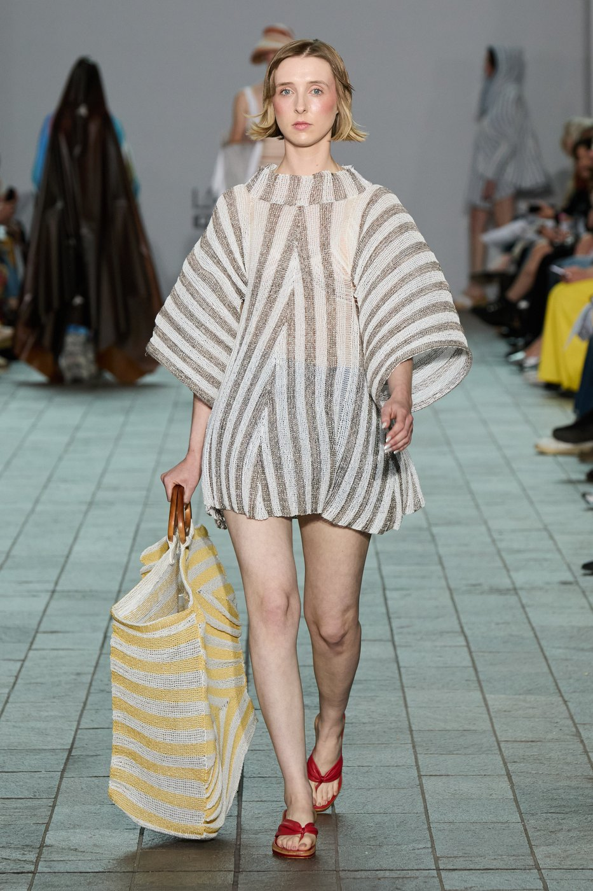
01 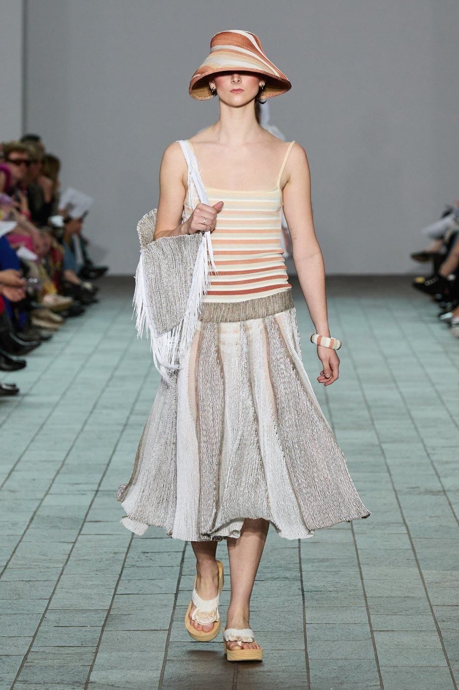
02 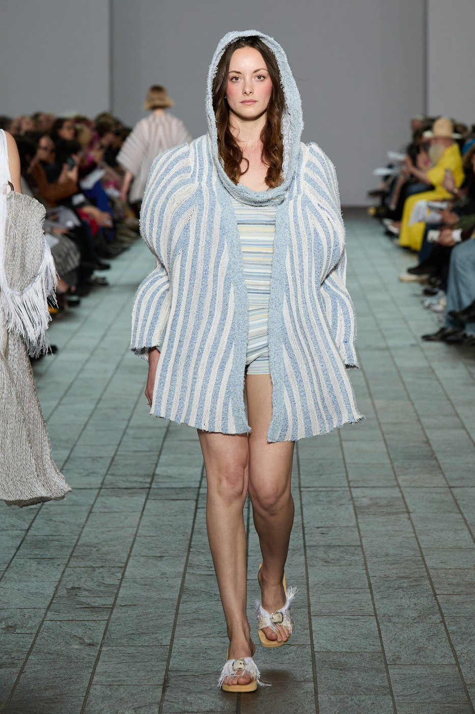
03 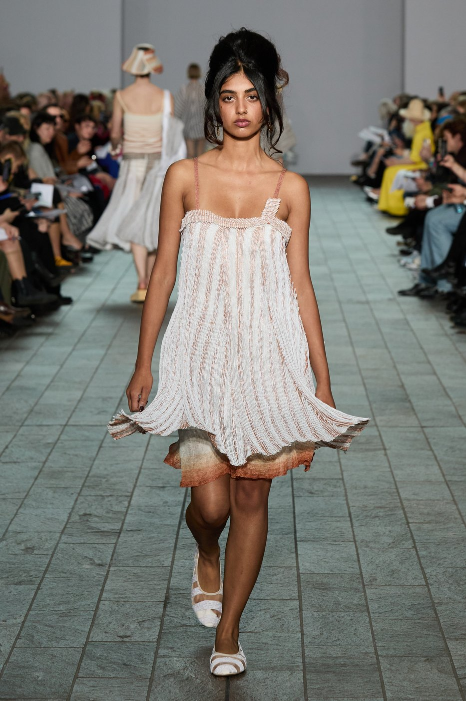
04 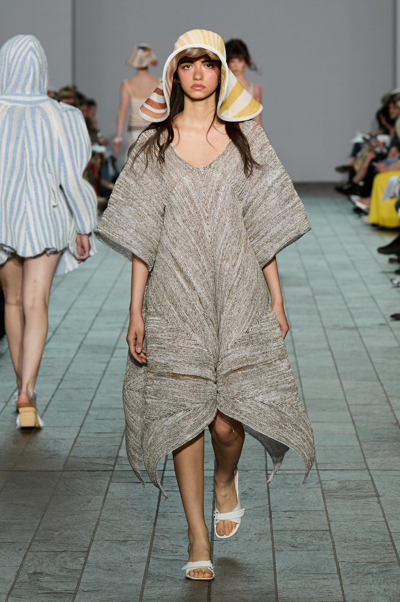
05 Rose Seekings｜CSM BA Fashion Design Knitwear 2025｜图：i-D（2025.6），摄影 Rebecca Maynes｜仅供课堂研究
第1课时｜45分钟
女装设计 · 第07周
02 第06周→本周
分解板不换，往下再排一步 今天不换方法：分解板上站住的，排进春夏五套。
第06周分解板上的 今天叫 怎么用 家族（每行站住几个） 五套的来源 站住的变体才能进五套 不变项 五套都要在 遮住四套，单看一套也认得出 弱／中／强 五套的角色 弱的做入口，强的做收束 过头、淘汰那格 边界 五套都不越过它 验证图那个数 两套候选 第08周接着验
开场：有板的，数一数每行站住了几个；没板的，看下一页。
第1课时｜45分钟
女装设计 · 第07周
03 开场｜最小入口
10 分钟：有板没板，都先数出家族 五套从家族里来。
10 分钟做什么 有板 数每行站住几个，写在练习册第1张顶上。 没板 一句话＋一条轴三档。
来源 E-01 软体积·挂（胯部）｜E-02 挺括上身·撑｜E-03 固定点·收
原型 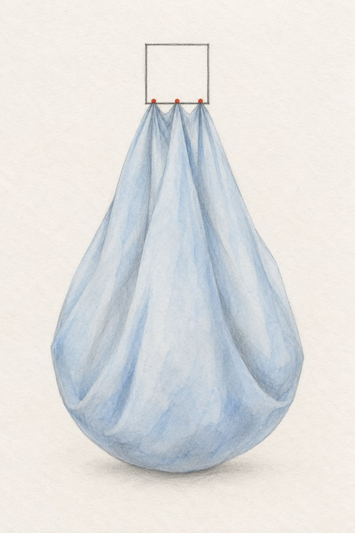
问题画成的形｜硬一小块＋软一大团＋几个点，不画身体
12 格 弱 中 强 过头 位 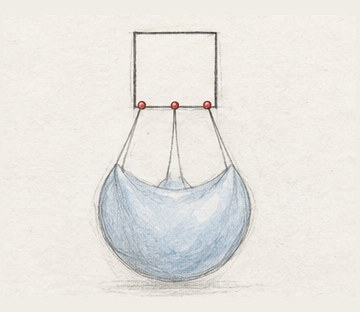
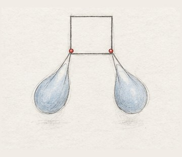
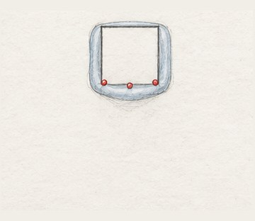
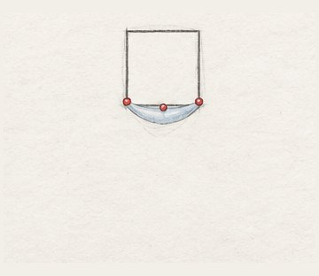
大 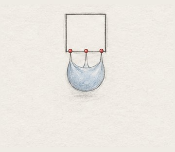
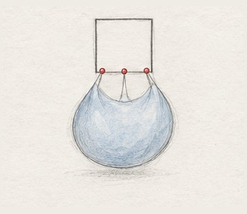
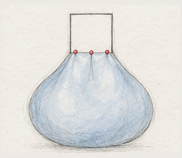
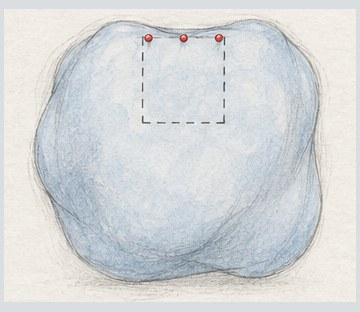
数 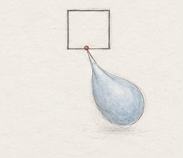
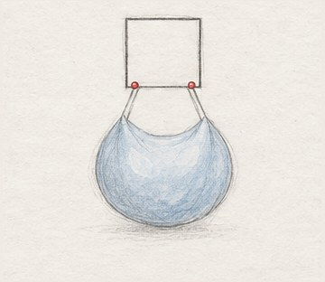
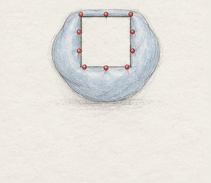
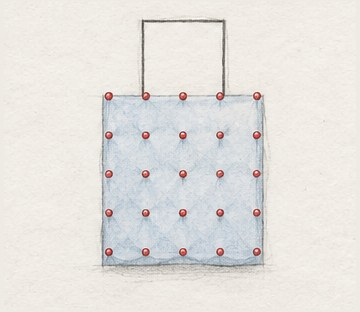
圈 3 格：位-强、大-强、数-中
验证图 位-强 放到袖口，抬臂：软边还垂下 2 cm≥3 cm 才看得出“挂”，才算过 不过 大-强 放到胯部，坐下：离地 −8 cm≥0 cm 算过 不过 数-中 转身：软体积偏 4 cm≤5 cm 算过 过 判定＋家族 修订 位-强：软边加宽到 4 cm淘汰 大-强：边界在两团保留 数-中：两点家族（暂定）：数量轴｜两点（已验）、一点（课后补验证图）
Qian Tan 分解板（第06周示例）教师代拟 ：只看最右一栏。 完成标准：有板三个数；没板一句话＋三个人形。
图：1 Granary《LCF MA Fashion 2026: The Body Under Pressure》（2026.2.21），过程图随文发布；台上图摄影 Roger Dean｜Qian Tan，仅供课堂研究｜12 格示意图：AI 生成，教师逐格给指令
第1课时｜45分钟
女装设计 · 第07周
04 系列是什么
五套是一个系列，不是五张图 第06周第04页看过：台上几套，软的那团一步步挪了位置。挪的是档，不动的是不变项。
01 原型：整条裙02 位置·弱：只在下身03 位置·中：移到两侧04 软团收起，只剩一件长衣05 位置·强：缩到边缘第一问 遮住四套只看一套：认得出是她吗？认不出＝太散，是拼盘
第二问 五套并排：说得出谁和谁不同吗？说不出＝太像，是复制
两问都要过，才算系列。
图：1 Granary《LCF MA Fashion 2026: The Body Under Pressure》（2026.2.21），过程图随文发布；台上图摄影 Roger Dean｜Qian Tan，仅供课堂研究
第1课时｜45分钟
女装设计 · 第07周
05 五套五种任务
五套五种任务，没有一套是凑数的 角色从档里来：上周排的弱、中、强，今天各有用处。
角色 这一套做什么 从哪一档来 开场 第一个出场，一眼看懂你的形 原型或“中” 入口 最好穿、最好卖 弱 发展 换一个部位或单品，规则照样成立 中 转折 换一条轴或换料，不让中间三套一样 另一行 收束 最强的一套，回应开场 强（不过头）
删掉哪一套，系列就少一项任务？答不出来的那一套，就是重复的。
第1课时｜45分钟
女装设计 · 第07周
06 参考① 线稿
五个人形，下面是同一条长裙 Rose Seekings（CSM BA 2025）在做出来之前，先画了一排五个人形。
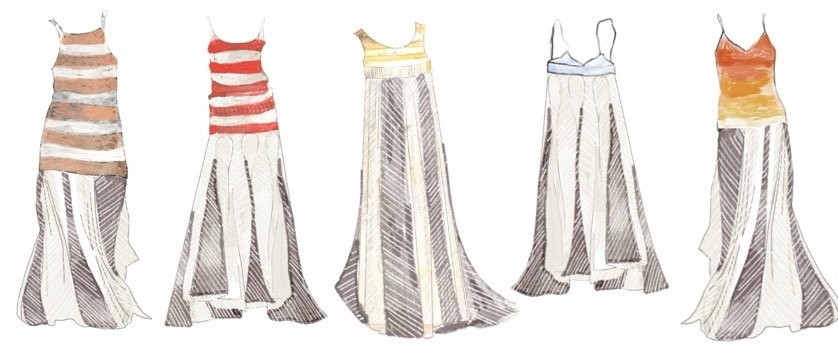
线稿：上身每套换，下身都是同一条拼条长裙 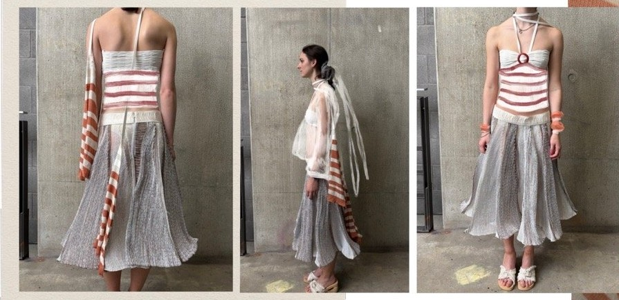
同一页：其中一套做出来试穿（后、侧、正） 从哪来据报道 童年的英国海边：条纹躺椅、风筝；用局部编织做出三角和风筝形。怎么排图上 五个人形下身是同一条拼条长裙；上身换成五种背心，条纹有粗有细，有的没有条纹。我的读法教师解读 一条裙子撑起五套——这就是重复单品。上身换的，就是档。图：1 Granary《Central Saint Martins BA 2025: Cautious Optimism》，线稿与试衣图随文发布｜Rose Seekings，仅供课堂研究
第1课时｜45分钟
女装设计 · 第07周
07 参考② 秀场
到了秀场：条纹有强有弱，五套都认得出 同一系列台上五套。线稿里那条拼条裙，出现在第 02 套。
01 粗条纹02 细条纹＋拼条裙03 体积变大04 细条纹05 条纹退掉，只剩尖角
不变项图上 条纹加三角、风筝形，五套都在；颜色只在沙色、赭红、浅蓝、白里换。强弱图上 01、03 粗条纹；02、04 细条纹；05 几乎没有条纹，只剩尖角下摆。我的读法教师解读 02 最好穿，像入口；03 体积突然变大，像转折；05 是有意放轻的一套。图：i-D《Central Saint Martins BA 2025》（2025.6），摄影 Rebecca Maynes｜Rose Seekings，仅供课堂研究
第1课时｜45分钟
女装设计 · 第07周
08 参考③ 试衣排一排
六套站成一排：同一条宽长裤，换颜色 Marie Schulze（CSM BA 2025）试衣时把整个系列并排站好，再上秀场。
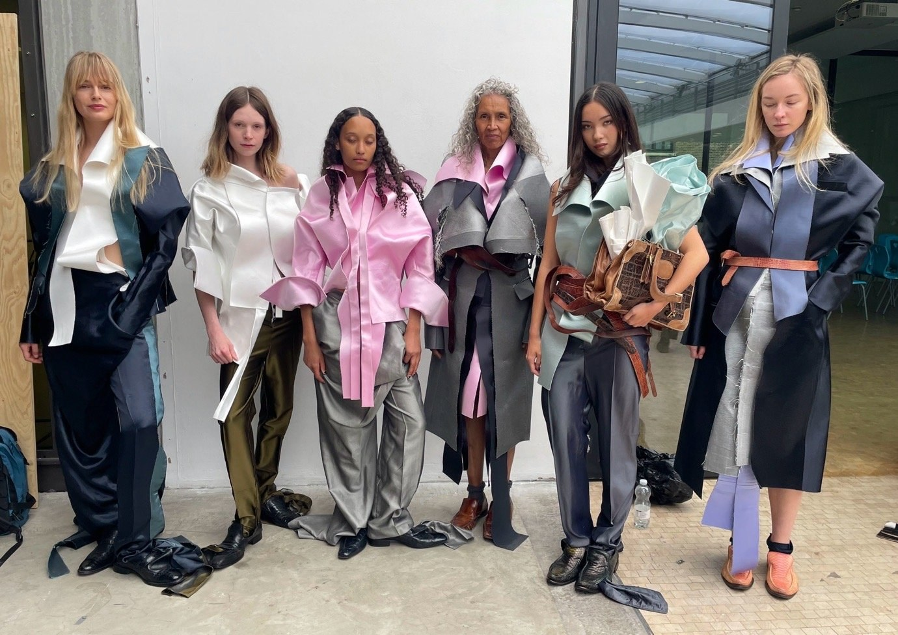
试衣：六套站成一排，系列在这里编辑 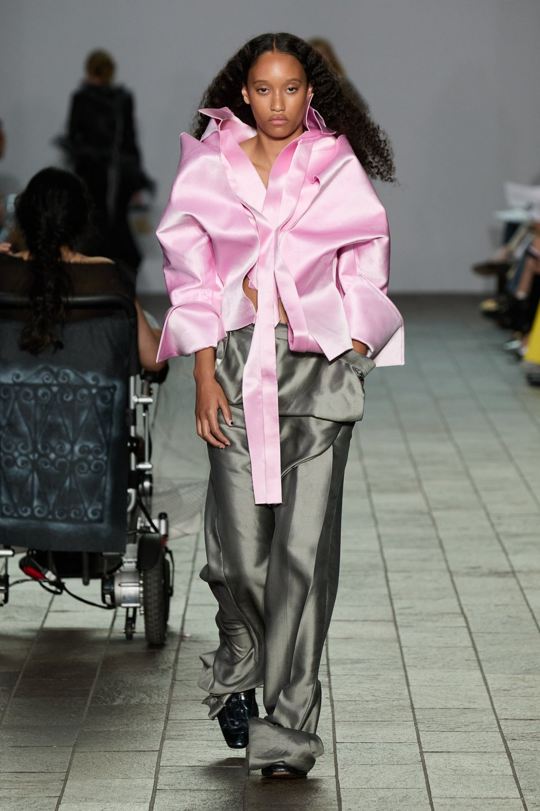
01 入口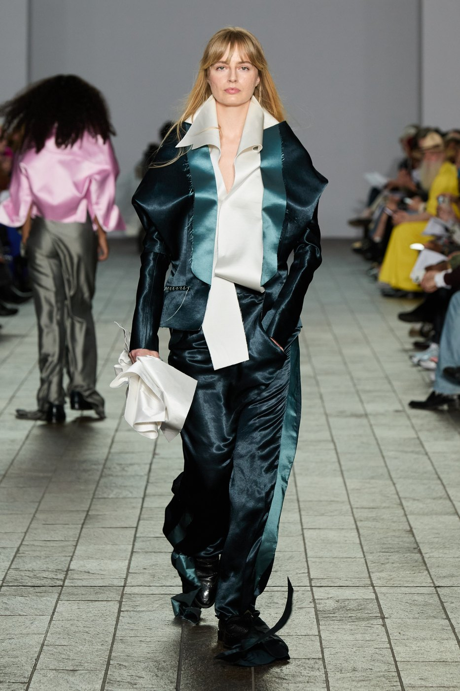
02 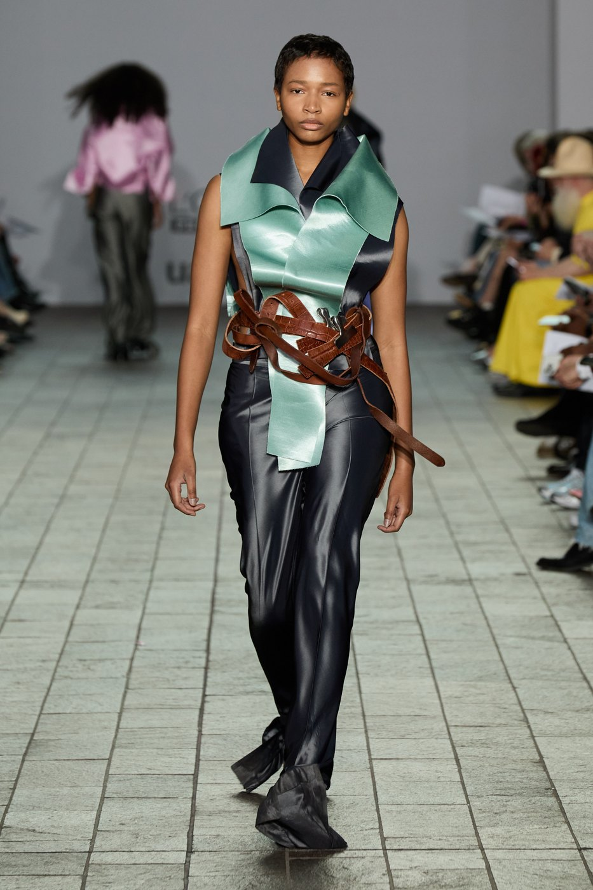
03 皮带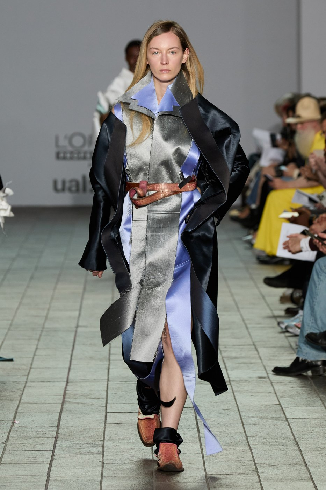
04 皮带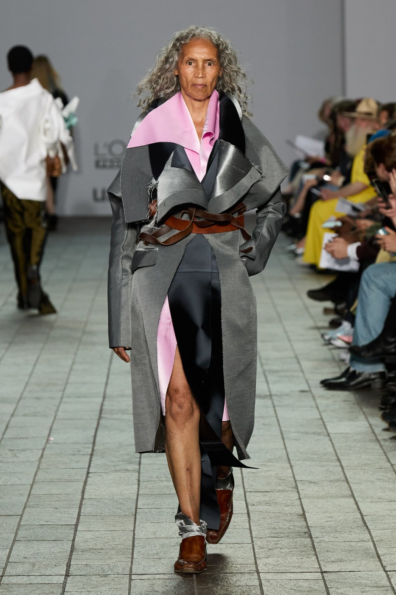
05 皮带｜最强从哪来据报道 在德国议会工作时见过的女性：亮面、剪裁很紧的西装。用缎、塔夫绸、双宫绸做男式衬衫和西装。怎么排图上 宽缎面长裤几乎每套都有，只换颜色；棕皮带出现三次；大翻领每套都在，大小不同。我的读法教师解读 01 粉衬衫＋长裤最好穿，像入口；05 外套叠外套最强，像收束。秀场是秋冬，但排法春夏一样用。图：试衣 1 Granary《Central Saint Martins BA 2025: Cautious Optimism》；秀场 i-D《Central Saint Martins BA 2025》（2025.6），摄影 Rebecca Maynes｜Marie Schulze，仅供课堂研究
第1课时｜45分钟
女装设计 · 第07周
09 示例｜做完以后
做完以后，练习册第3张是这样：五套＋一张五栏表 Qian Tan 没排过这张表。我按她台上五套和第06周分解板代拟。教师代拟
01 02 03 04 05 角色 开场 入口 发展 转折 收束 行·档 原型：整条裙 位置·弱：只在下身 位置·中：移到两侧 软团收起，只剩一件长衣 位置·强：缩到边缘 单品 短外套＋高立领＋软长裙 短外套＋高立领＋收口软裤 高立领＋无袖长衣＋两侧软片 高立领长外套 短外套＋高立领＋宽软裤 候选 候选A 候选B
重复单品：高立领 5 套；短外套 3 套；软的下装 3 套。教师解读
先看终点：今天两节课，就是把五套和这张表填满。
图：1 Granary《LCF MA Fashion 2026: The Body Under Pressure》（2026.2.21），过程图随文发布；台上图摄影 Roger Dean｜Qian Tan，仅供课堂研究
第1课时｜45分钟
女装设计 · 第07周
10 第1课时五步
第1课时：从家族到五套 1 开场：数家族，或最小入口 10′ 1.5 先定轮廓和单品：挑一张图，描、问、写 5′ 2 画到人形上：站住的变体，每个一个人形（练习册第1张） 10′ 3 每个人形下面写：行·档·角色 4′ 4 选五个，标出场顺序 01—05 3′ 课堂产出：一行单品公式＋一张画满的练习册＋选好的五套。
第1课时｜45分钟
女装设计 · 第07周
11 步骤1.5｜先定轮廓和单品
5 分钟：先定轮廓和单品 挑一张上周收集的全身图。
例教师代拟 ：体积在下摆｜上贴下松｜切在胯、脚踝 → 短外套＋软长裙 描 手机上沿衣服外轮廓描一圈，细节不管。问 体积在哪（肩／腰／下摆）？离身多少（贴／松）？切在哪两条线（腰·胯·膝·脚踝）？写 外层＋内层＋下装，最多三件。完成标准：练习册第1张顶上写一行。没图的借 Qian Tan、Rose 或 Marie 的。
图：1 Granary《LCF MA Fashion 2026: The Body Under Pressure》（2026.2.21），过程图随文发布；台上图摄影 Roger Dean｜Qian Tan，仅供课堂研究
第1课时｜45分钟
女装设计 · 第07周
12 参考｜秀评怎么写
秀评这样写：不说“H 型”，说哪儿鼓、哪儿收、到哪儿 三句问话，秀评天天在用。照着写你自己的那一行。
问 秀评原句（中文为教师翻译）｜英文原句 — 品牌 体积在哪 窄身丝绒半裙，下摆嵌进褶裥三角布，到了下摆才散开。narrow velvet skirts that flare at the hem — Khaite 灯笼裤先夸张地鼓起来，到脚踝再收紧。Balloon trousers, exaggerated then pulled tight at the ankle — Giuseppe di Morabito 离身多少 夹克从合身一路放宽，放到刚好算大廓形。Jackets went from fitted to just this side of oversize — Gucci 套装更贴身；西装外套的剪裁专门突出腰。suiting is closer to the body; a blazer is cut to emphasize the waist — Teurn Studios 切在哪 半裙有短的梯形，有窄的铅笔裙，也有长到小腿中段的。Skirts ranged from short and trapeze-shaped to … mid-calf length — Gucci 短裤长过膝盖。Shorts extend below the knee — Teurn Studios 同一件换档 长裤一直是亮点：松松的桶形、利落的双色喇叭裤、流动的黑色工装裤。Trousers were consistent winners, from easy barrel shapes to sharp two-tone flares, fluid black cargos — Christopher Esber
春夏秀评里最常写的单品：连衣裙 70%｜夹克 49%｜衬衫 47%｜半裙 45%｜长裤 43%；最常写的部位：腰 23%｜肩 15%｜袖 15%。
文：Vogue Runway 秀评（Resort 2027，Nicole Phelps 等），节选，中文为教师翻译；比例＝198 场春夏、早春秀评中写到该词的场数｜仅供课堂研究
第1课时｜45分钟
女装设计 · 第07周
13 步骤2—3｜画到人形上
14 分钟：站住的变体，每个画到一个人形上 分解板上的形，画在你的单品上：放哪儿照卡上写，大小都一样。
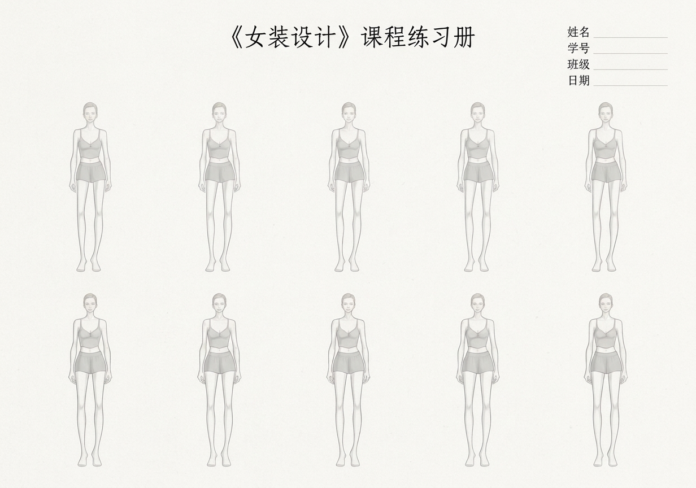
练习册：一张 10 个人形，今天用 3 张 画 每个站住的变体一个人形，最多 10 个。写 人形下面写哪一行、哪一档，例：位置·中。再写 它能当什么角色：入口、发展还是收束？完成标准：每个人形下面都有“行·档·角色”三样。
练习册（人形模板）：教师提供，人形为 AI 生成
第1课时｜45分钟
女装设计 · 第07周
14 步骤4｜选五个排顺序
3 分钟：选五个，排出场顺序 不按好看排，按角色排：开场在前，收束在后，入口不能缺。
完成标准：五个人形旁标了 01—05，五个角色没有两个一样。
图：1 Granary《LCF MA Fashion 2026: The Body Under Pressure》（2026.2.21），过程图随文发布；台上图摄影 Roger Dean｜Qian Tan，仅供课堂研究
第2课时｜45分钟
女装设计 · 第07周
15 第2课时五步
第2课时：从五套到系列阵列 5 补重复单品，重画五套（练习册第2张） 9′ 6 春夏三问（先看参考④） 8′ 7 画系列阵列 V1（练习册第3张）＋五栏表 11′ 8 选两套候选 5′ 9 互评＋小结 8′＋2′ 本课只画不做：五套都在纸上，料从面料参考图里挑。
课堂产出：五套阵列 V1＋五栏表＋两套候选。
第2课时｜45分钟
女装设计 · 第07周
16 步骤5｜重复单品
9 分钟：让一件单品出现在两套以上 系列能卖、能做，是因为单品会重复：上装换，下装可以不换。
例｜Qian Tan教师解读 短外套出现 3 次，每次配的下装不一样。做 挑一件单品放进至少 2 套，在练习册第2张重画五套。数 五套一共几件不同的单品？写在页边。完成标准：至少一件单品标了“×2”以上。
图：1 Granary《LCF MA Fashion 2026: The Body Under Pressure》（2026.2.21），过程图随文发布；台上图摄影 Roger Dean｜Qian Tan，仅供课堂研究
第2课时｜45分钟
女装设计 · 第07周
17 参考④ 春夏的料
轻、挺、露：春夏三问，她都答了 Doyeon Jeong（CSM BA 2025）的五套：同一种折纸花的形，用轻料做。
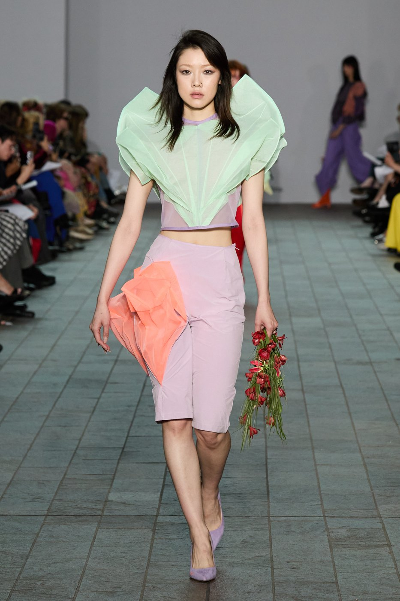
01 露手臂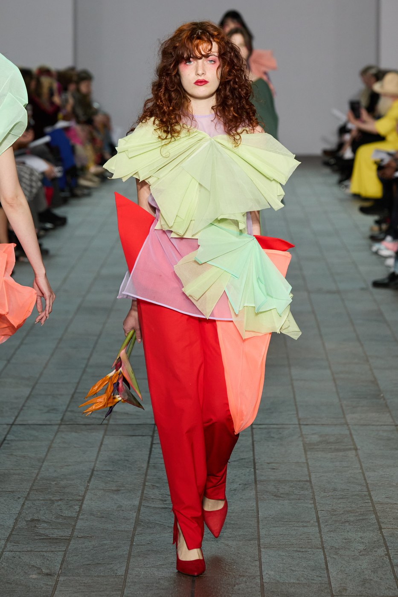
02 一层纱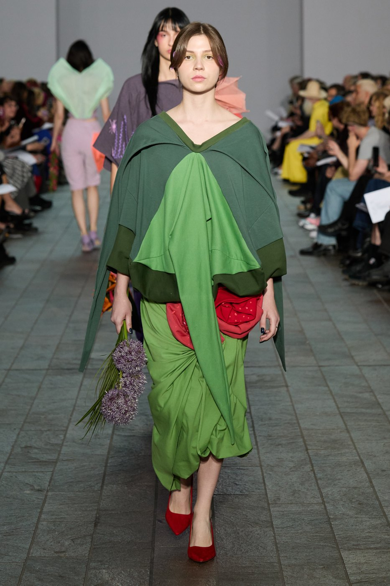
03 多一层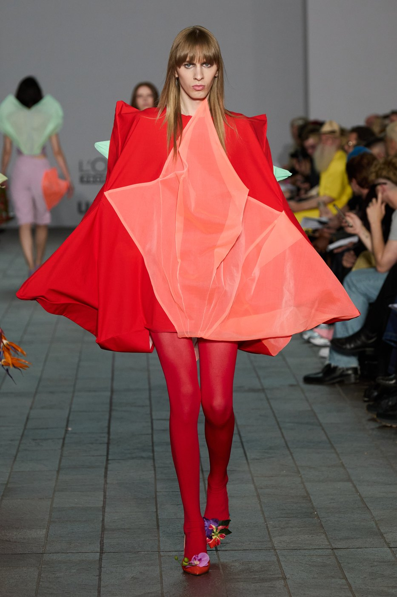
04 最强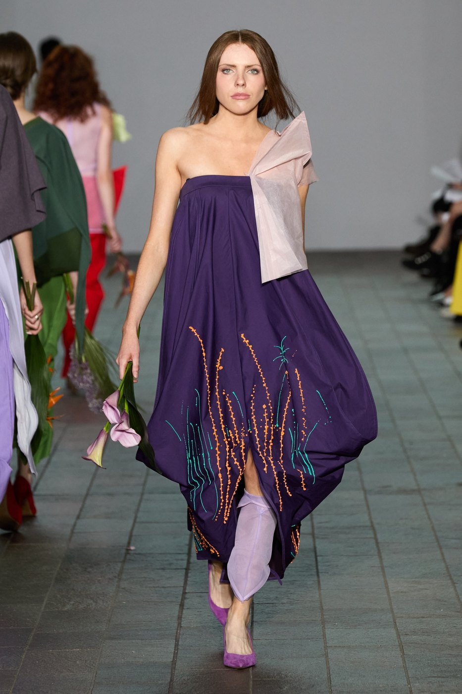
05 露肩从哪来据报道 外婆受限制，只能把自己的一部分藏起来；她自己在插花里第一次感到放松。折纸花是这个系列的核心。什么料据报道 轻而挺的欧根纱、针织、棉——她认为衣服应该轻、舒服；颜色取自她自己插的花。我的读法教师解读 露：手臂、肩；层：一层为主，外加一片折纸；料：挺的纱撑形，软的针织贴身。图：i-D《Central Saint Martins BA 2025》（2025.6），摄影 Rebecca Maynes｜Doyeon Jeong，仅供课堂研究
第2课时｜45分钟
女装设计 · 第07周
18 步骤6｜春夏三问
8 分钟：每套问三句，春夏才成立 春夏的差别落在身上。
问 每套写一句 露多少 哪里露出来散热：领口、手臂、小腿？ 几层 室外一层，进空调房加一层。 什么料 第04周面料参考图里挑，指得到是哪张。
例｜05 收束教师代拟 ：改短立领；外套能脱；软边换真丝雪纺。
完成标准：五套各写三句。
第2课时｜45分钟
女装设计 · 第07周
19 步骤7｜系列阵列 V1
11 分钟：五套并排，画成系列阵列 V1 练习册第3张：同一个大小、正面站姿，按 01—05 排；下面画一张五栏表。
练习册：一张 10 个人形，今天用 3 张 先问 遮住四套看一套：认得出吗？再问 五套并排：说得出谁和谁不同吗？五栏表 角色、行·档、单品、春夏三问、候选。完成标准：两问都答得出；表里五套没有一格空着。
练习册（人形模板）：教师提供，人形为 AI 生成
第2课时｜45分钟
女装设计 · 第07周
20 步骤8｜两套候选
5 分钟：选两套，第08周接着验 一套最好穿，一套最强。难度一样的两套，等于只验了一次。
Qian Tan教师代拟 要验的那一句 候选A｜入口 02 坐下：收口软裤堆在脚背上，≤3 cm 才算过。 候选B｜收束 05 抬臂：第06周加宽到 4 cm 的软边，还垂下 ≥3 cm 吗？
完成标准：两套各写一句：一个动作＋一个部位＋一个数。
第2课时｜45分钟
女装设计 · 第07周
21 同伴互评＋第08周交什么
8 分钟：两人一组，指着阵列说 说的人 “我的五套靠＿＿认得出；入口和收束差在＿＿。”
听的人只问一句 “删掉哪一套，系列少了什么？”
第08周课前交 练习册第3张拍一张＋五栏表，合成 1 页 PDF：学号_姓名_第07周.pdf（课堂输出，不计分；作业 3 第10周交）。课后补 两套候选各画正面、背面款式图，第08周中期评审用。
意见落到一套或一格上。
第2课时｜45分钟
女装设计 · 第07周
22 总结＋一句话
每一套都有任务，系列才成立 认得出 不变项五套都在
分得开 档不同，角色不同
能重复 一件单品进两套以上
穿得住 春夏三问都答得出
下课前完成并朗读 “我的五套靠 ______ 认得出；入口是 ______ ，收束是 ______ ；重复的单品是 ______ ；第08周先验 ______ 。”
第08周：两套候选画成款式图，进中期评审。
十六周课程路径 女装设计 · 第07周 · 课后查阅｜教学补充
十六周不是孤立主题，而是一条连续的设计证据链 前8周建立方法并完成中期验证；后8周深化春夏与秋冬系列，最终独立完成主题系列与答辩。
01–04 判断与定位
05–08 提取与验证
09–12 季节系列开发
13–16 独立项目与考核
课后查阅｜教学补充
女装设计 · 第07周
A02 教材证据
先搭产品骨架，再画最终效果图 教材给了一张真实品牌的女装夏季产品结构表 ——设计从这张表开始，不是从效果图开始。
先数品类，再画图。 衬衫 12 款、连衣裙 18 款、半裙 7 款、长裤 5 款——先定每个品类做几款，再决定它长什么样。
基本款多于形象款。 夏季 88 款里基本款 52、形象款 36。换算到你的五套：形象款最多两套 。
上装多于下装。 衬衫＋T恤＋外套合计远超裙与裤——因为一条裤子要配好几件上衣。重复单品就是从这儿来的。
观察任务：照这张表给你的五套列一遍——几件上装、几件下装、几件连衣裙、几件外搭。哪一格是空的？
来源：于芳《服装设计基础与创意实践》（中国纺织出版社，2023），第122页，表7-1。图像按教学需要裁切局部，未改变原始比例。第15周会用同一张表回头核对你的比例。
课后查阅｜教学补充
女装设计 · 第07周
A03 复杂度
每套单品越多，不代表设计越完整 复杂度是成本 ，不是优点。五套加起来，要能在第08周之前画得完。
低 2件；清楚的商业入口。
放在引流款上——它要证明系列能被理解，不需要证明难度。
中 3件；交叉搭配与层次。
放在发展和转折上——层次变化在这里发生。
高 3—4件；承担结构实验或高潮。
整个系列最多两套。超过两套，中期评审就交不出完整证据。
警戒 所有造型都高复杂度，工作量就会失控。
五套全高复杂度的结果不是“更完整”，是两套都画不完。
课后查阅｜教学补充
女装设计 · 第07周
A04 教材证据
春夏的材料证据有两层：选什么，和把它改成什么 左边是选来的材料 ，右边是被改造过的材料 。春夏尤其需要第二层。
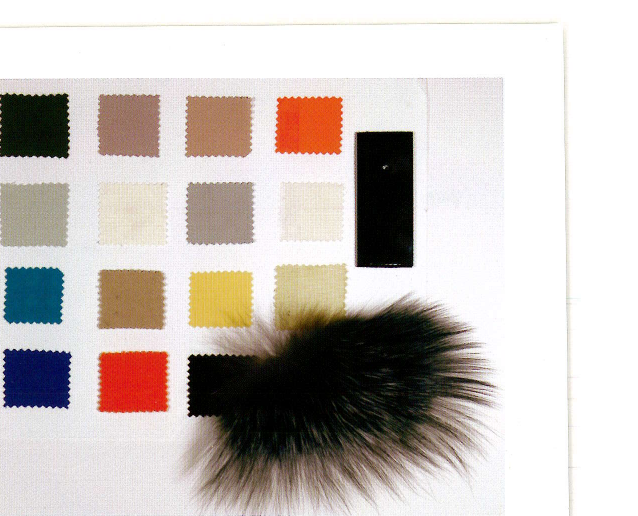
01 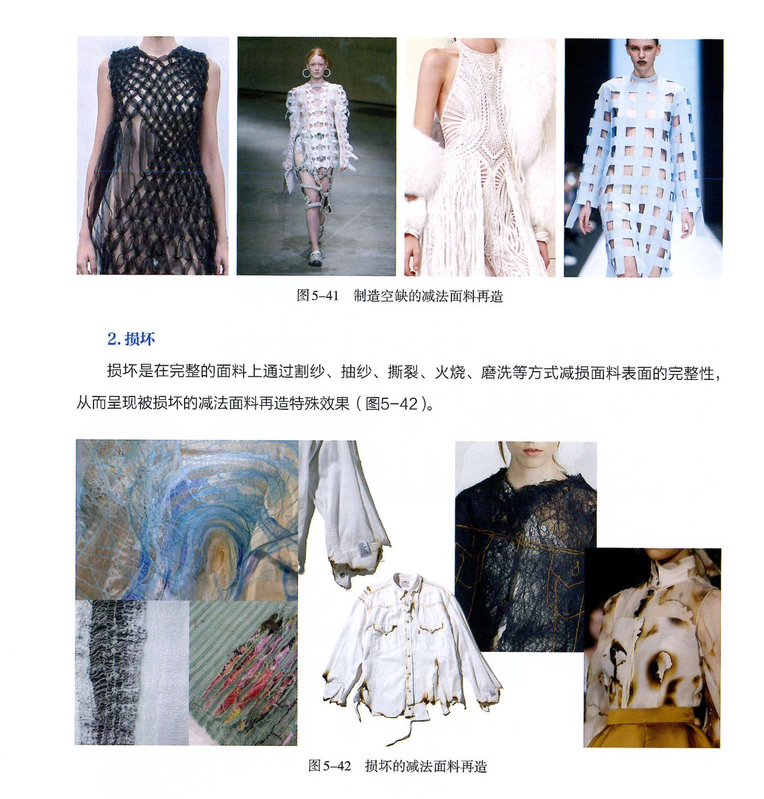
02 01 色彩与材料板： 色卡按明度分组，深色只占最下面一行；橙、红、蓝这些强调色都只有一小块。旁边压着一块皮草——颜色和材料必须一起看 ，同一个米色在平纹布上和在毛皮上不是一回事。
02 图5-41／5-42 减法面料再造： 割纱、抽纱、镂空、烧灼，教材把它们归为“减法”。对春夏来说，减法就是通风 ——每一个洞既是装饰，也是散热口。
记录写在图上： 用的是哪张面料参考图、画在哪个部位。“手感清爽”不是记录。
观察任务：你的五套里，有没有一处开口同时解决造型和体感 ？只解决其中一个，就还没到春夏。
来源：01 Steven Faerm《The Fashion Design Course》（Quarto Publishing plc），第52页；02 于芳《服装设计基础与创意实践》（中国纺织出版社，2023），第80页。图像按教学需要裁切局部，未改变原始比例。
课后查阅｜教学补充
女装设计 · 第07周
A05 交叉搭配
重复单品让系列成为产品系统 重复不是偷懒。同一条裤子出现在三套里，系列才有产品逻辑 ——Rose Seekings 的线稿就是这么做的。
核心上装 至少进入2套，改变下装与层次。
例：一件衬衫，配长裤是入口，配长裙是发展。同一件，两个角色。
核心下装 与不同上装形成两种角色。
例：一条条纹长裤贯穿三套，上装每次都换。开发量减一半，系列反而更整。
外层 连接室内外温度转换。
本地一天要跨 10 度温差，外层是春夏系列里最被低估的一件。
变化件 承担实验强度，不要求高频重复。
它不必重复，但要能和核心单品搭得上——搭不上的实验件，是孤立的。
检查： 数一数五套里一共有几件不同的单品。超过 12 件，第08周之前画不完；少于 8 件，系列会显得单薄。
课后查阅｜教学补充
女装设计 · 第07周
A06 系列平衡
商业入口与实验高潮必须共存 两者共同证明设计系统具有范围。
检查左边： 把入口造型的价格说出来。说不出，它就还不是入口。
检查右边： 把高潮造型的不变项指出来。指不出，它只是“做得复杂”，不是高潮。
比例： 五套里入口至少一套、高潮最多两套。全是入口＝没有立场，全是高潮＝画不完也卖不掉。
课后查阅｜教学补充
女装设计 · 第07周
A07 系列矩阵
一页矩阵同时检查六类关系 效果图下面的信息要标准化——五套用同一套字段，才比得出来 。
角色 开场 / 入口 / 发展 / 转折 / 收束，五套各占一个，不重复。
怎么用： 先填“角色”和“产品”两列——这两列填完，材料和色彩基本就定了。
“风险”那一列不能空。 写不出风险，说明还没想过怎么做，中期评审第一个问的就是它。
课后查阅｜教学补充
女装设计 · 第07周
A08 形成性评价
第07周检查：系列是否可进入中期款式图验证 不看五张图漂不漂亮，只看系统能不能工作。四项全部成立 才进入第08周。
判定线： “成立”＝别人能自己指出证据；“部分成立”＝要你解释才找得到；“需重做”＝解释了也找不到。
本周成果按平时成绩（40%）计分 ，并直接进入期末六项标准中的“市场与定位”和“统一与丰富”两项（共 40 分）。
课后查阅｜教学补充
女装设计 · 第07周
A09 补充资料 线稿对秀场 Yuze Li
六个人形，六个任务：线稿和秀场一套一套对得上 Yuze Li（CSM BA 2025，来自中国）先画了一排六个“英雄”，每个人形旁边手写了做法。
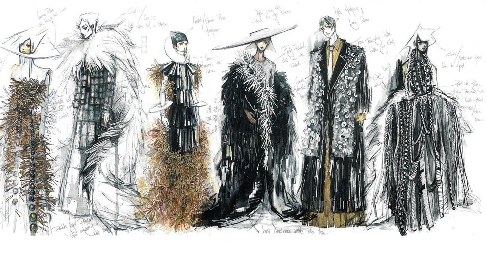
线稿《THE HEROIC ERA》：六个人形，旁边是工艺笔记 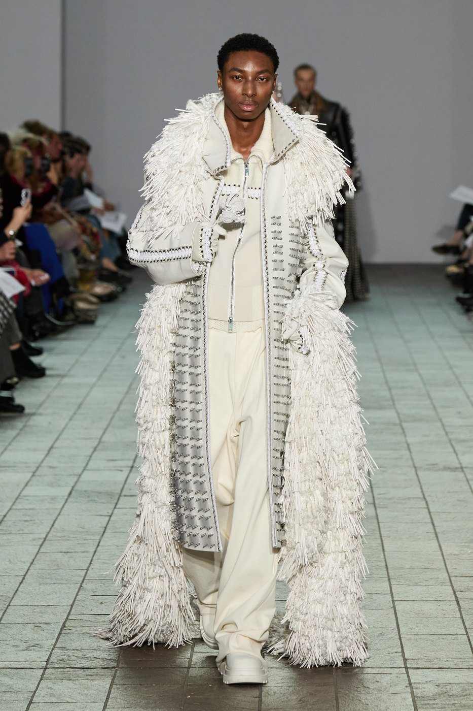
01 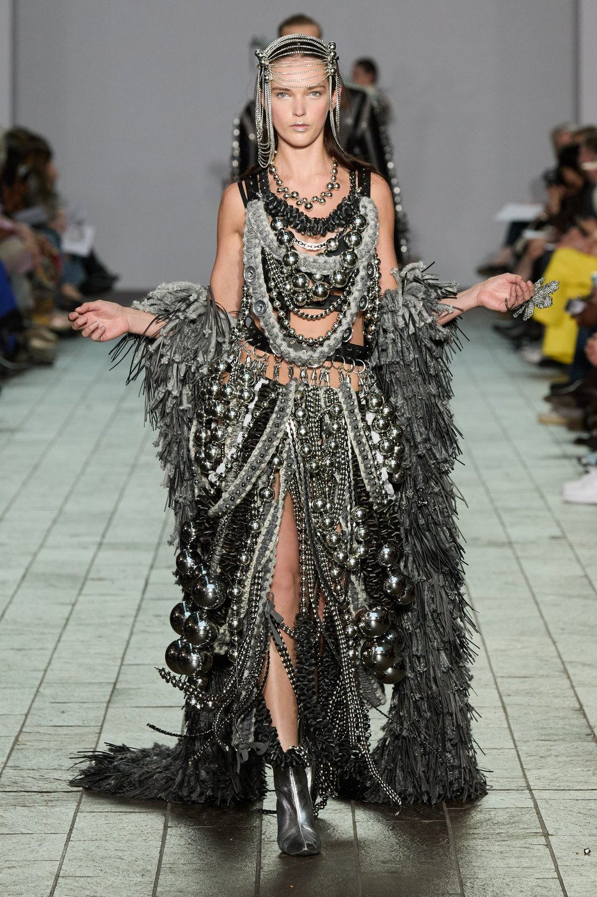
02 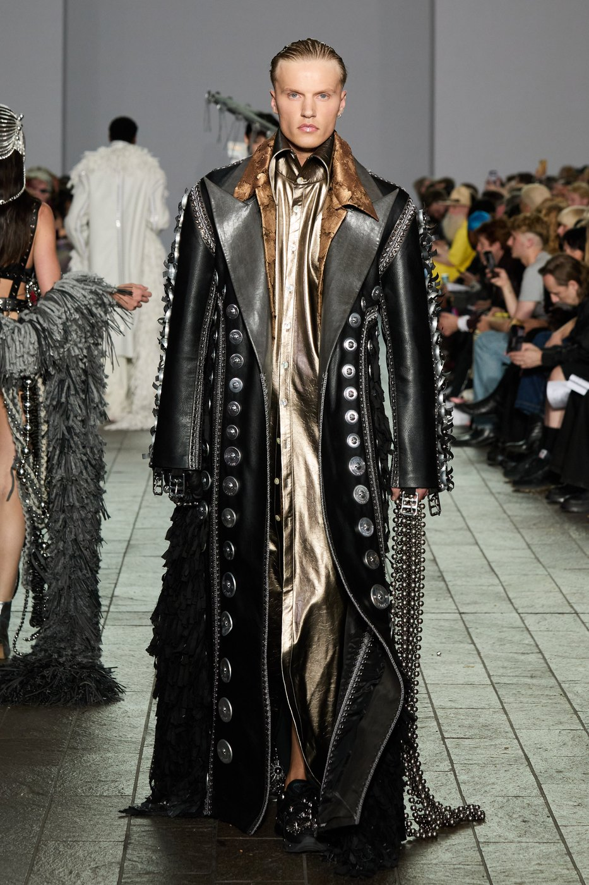
03 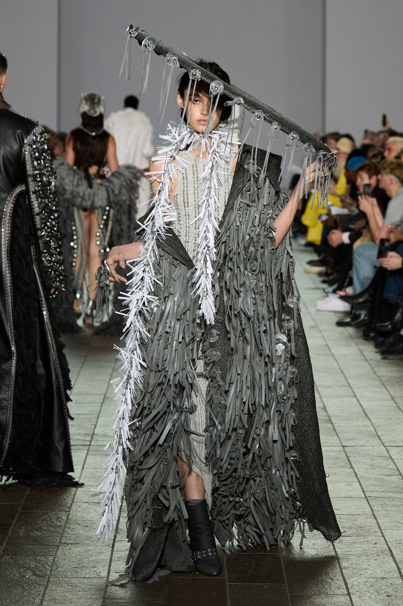
04 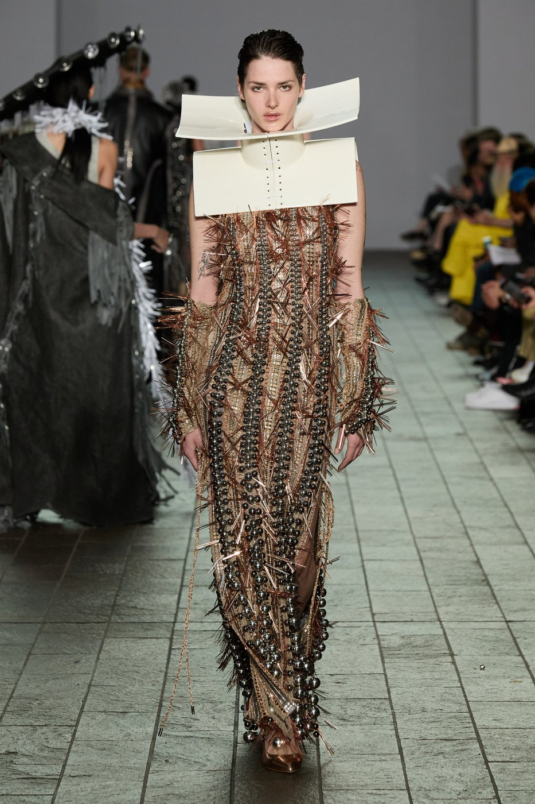
05 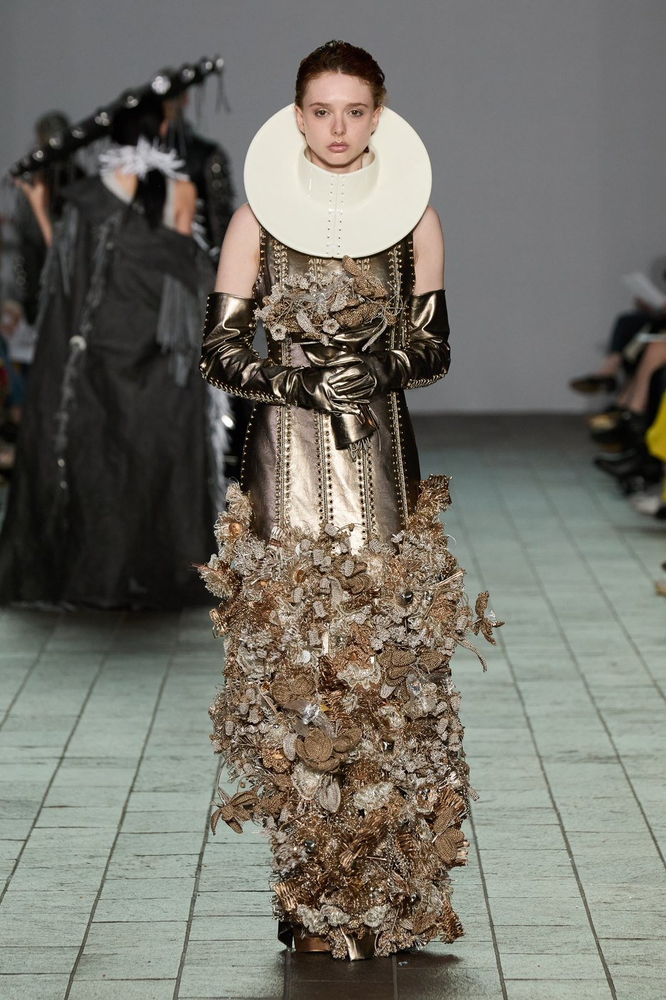
06 据报道：钩针、手编与机织、刺绣，加上陶瓷、藏族黑陶、玻璃、中国结；金银配黑白。我的读法教师解读 ：每套都有自己的角色，但几乎没有重复单品——这样的系列好看，却难卖、难做。
图：线稿 1 Granary《Central Saint Martins BA 2025: Cautious Optimism》；秀场 i-D《Central Saint Martins BA 2025》（2025.6），摄影 Rebecca Maynes｜Yuze Li，仅供课堂研究
课后查阅｜教学补充
女装设计 · 第07周
A10 期末评价连接
本周成果将进入同一套六项终期评价 平时训练不是零散作业，而是期末系列的证据积累；本页依据《25级〈女装设计〉考核大纲》期末实践考试评分标准（满分100分）。
10分
时代性与创意 主题回应当下，并形成自己的问题与立场。
10分
趋势性与元素 提炼的设计元素与当季趋势、审美和来源一致。
20分
当代女性适配 款式回应身体、动作、场景与真实穿着需求。
20分
整体造型美感 比例、色彩、材料与细节共同形成完整造型。
20分
市场与定位 顾客、价格、品类和使用情境边界清楚。
20分
统一与丰富 风格统一，同时具有角色、搭配与造型变化。
课堂 全部
← →